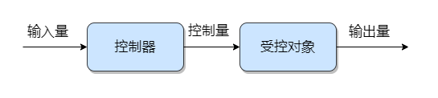
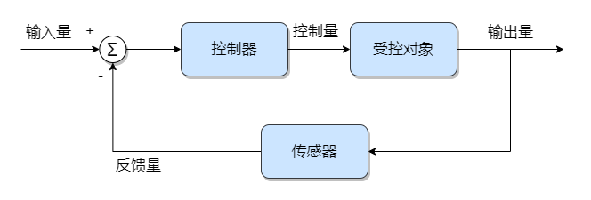
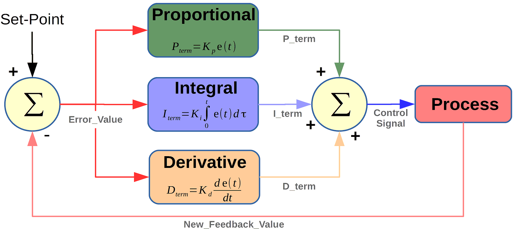
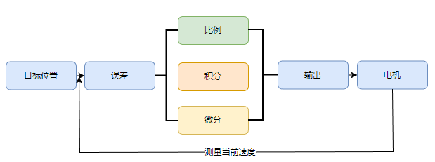
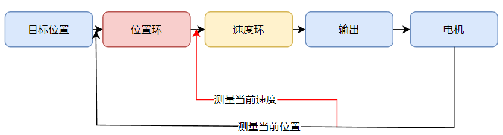
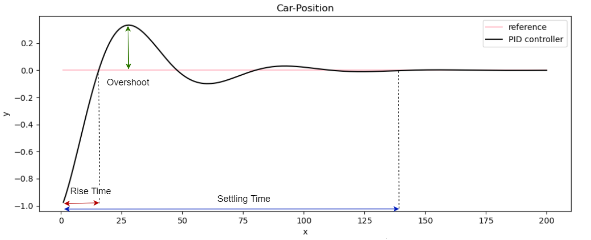
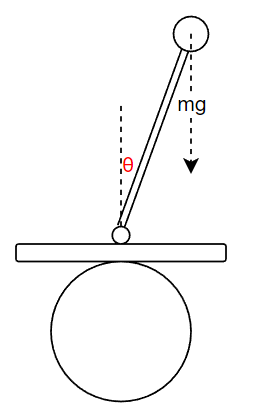
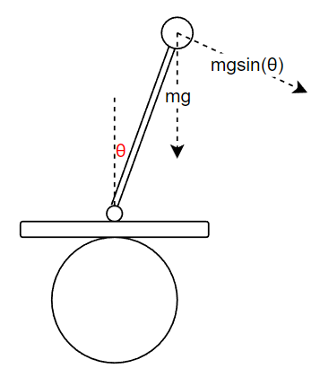
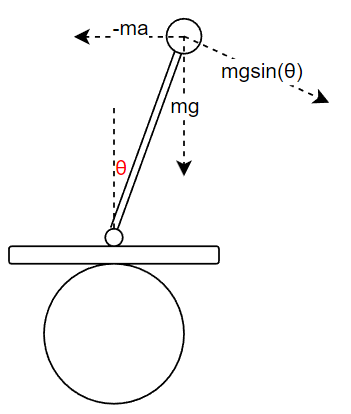
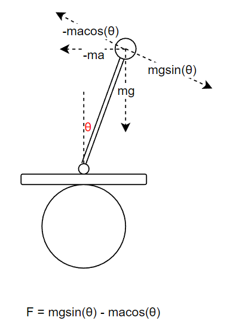

<!DOCTYPE lake>
<h2 data-lake-id="inBhl" id="inBhl"><span data-lake-id="uc6f3c4b2" id="uc6f3c4b2">开环控制</span></h2><p data-lake-id="uca6929cf" id="uca6929cf"><span data-lake-id="ub7caf67b" id="ub7caf67b">开环控制，全称开环控制系统（Open Loop Control System），又称为无反馈系统。即系统的输入可以影响输出，但是 输入不受输出影响 的系统。输入到输出的信号是单向传递的。</span></p><p data-lake-id="ubd6ea7fa" id="ubd6ea7fa"></p><p data-lake-id="u9b2a4754" id="u9b2a4754"><span data-lake-id="ub6ba195c" id="ub6ba195c">以下为生活中的例子：</span></p><table class="lake-table" data-lake-id="R3Qdv" id="R3Qdv" margin="true" style="width: 750px"><colgroup><col width="150"/><col width="150"/><col width="150"/><col width="150"/><col width="150"/></colgroup><tbody><tr data-lake-id="uf330fa19" id="uf330fa19" style="height: 36px"><td data-lake-id="u356ab925" id="u356ab925" style="background-color: #FBDE28; vertical-align: middle"><p data-lake-id="u2197846a" id="u2197846a" style="text-align: center"><span data-lake-id="ue157ec51" id="ue157ec51">控制系统</span></p></td><td data-lake-id="uc2584761" id="uc2584761" style="background-color: #FBDE28; vertical-align: middle"><p data-lake-id="u84120e96" id="u84120e96" style="text-align: center"><span data-lake-id="u6b005cad" id="u6b005cad">输入量</span></p></td><td data-lake-id="u190e9971" id="u190e9971" style="background-color: #FBDE28; vertical-align: middle"><p data-lake-id="uf46a912d" id="uf46a912d" style="text-align: center"><span data-lake-id="u57ef7776" id="u57ef7776">控制器</span></p></td><td data-lake-id="u19c26b05" id="u19c26b05" style="background-color: #FBDE28; vertical-align: middle"><p data-lake-id="ua822aee0" id="ua822aee0" style="text-align: center"><span data-lake-id="u312dad47" id="u312dad47">受控对象</span></p></td><td data-lake-id="u135f09a5" id="u135f09a5" style="background-color: #FBDE28; vertical-align: middle"><p data-lake-id="u20192c08" id="u20192c08" style="text-align: center"><span data-lake-id="udae07c9d" id="udae07c9d">输出量</span></p></td></tr><tr data-lake-id="u2dac71a0" id="u2dac71a0"><td data-lake-id="u468b066b" id="u468b066b" style="background-color: #FBE4E7; vertical-align: middle"><p data-lake-id="u77bced9e" id="u77bced9e" style="text-align: center"><span data-lake-id="uc17f4edd" id="uc17f4edd" style="color: rgba(0, 0, 0, 0.87)">风扇调速</span></p></td><td data-lake-id="u589c4330" id="u589c4330" style="background-color: #D9EAFC; vertical-align: middle"><p data-lake-id="uc2df5769" id="uc2df5769" style="text-align: center"><span data-lake-id="u9acb6349" id="u9acb6349" style="color: rgba(0, 0, 0, 0.87)">设置档位</span></p></td><td data-lake-id="u6102d63a" id="u6102d63a" style="background-color: #E8F7CF; vertical-align: middle"><p data-lake-id="u9bf67410" id="u9bf67410" style="text-align: center"><span data-lake-id="u8a5895a1" id="u8a5895a1" style="color: rgba(0, 0, 0, 0.87)">控制电路</span></p></td><td data-lake-id="u0182cc45" id="u0182cc45" style="background-color: #D9DFFC; vertical-align: middle"><p data-lake-id="u0ef7d5b8" id="u0ef7d5b8" style="text-align: center"><span data-lake-id="u87aabb1f" id="u87aabb1f" style="color: rgba(0, 0, 0, 0.87)">风扇电机</span></p></td><td data-lake-id="ub3123ecb" id="ub3123ecb" style="background-color: #FBDFEF; vertical-align: middle"><p data-lake-id="u43409b2b" id="u43409b2b" style="text-align: center"><span data-lake-id="u1228cd19" id="u1228cd19" style="color: rgba(0, 0, 0, 0.87)">风扇转速</span></p></td></tr><tr data-lake-id="ude1b506b" id="ude1b506b"><td data-lake-id="ub11aa666" id="ub11aa666" style="background-color: #FBE4E7; vertical-align: middle"><p data-lake-id="ue2d89bb7" id="ue2d89bb7" style="text-align: center"><span data-lake-id="u737438ab" id="u737438ab" style="color: rgba(0, 0, 0, 0.87)">红外感应门</span></p></td><td data-lake-id="uf2f5413d" id="uf2f5413d" style="background-color: #D9EAFC; vertical-align: middle"><p data-lake-id="u8607021c" id="u8607021c" style="text-align: center"><span data-lake-id="udd9fef35" id="udd9fef35" style="color: rgba(0, 0, 0, 0.87)">人体热辐射</span></p></td><td data-lake-id="udf7154b6" id="udf7154b6" style="background-color: #E8F7CF; vertical-align: middle"><p data-lake-id="u1d37cf9e" id="u1d37cf9e" style="text-align: center"><span data-lake-id="u45699d33" id="u45699d33" style="color: rgba(0, 0, 0, 0.87)">控制电路</span></p></td><td data-lake-id="ue1e22d60" id="ue1e22d60" style="background-color: #D9DFFC; vertical-align: middle"><p data-lake-id="u7d139351" id="u7d139351" style="text-align: center"><span data-lake-id="u00a58ae1" id="u00a58ae1" style="color: rgba(0, 0, 0, 0.87)">自动门电机</span></p></td><td data-lake-id="ud721d369" id="ud721d369" style="background-color: #FBDFEF; vertical-align: middle"><p data-lake-id="u4a24075d" id="u4a24075d" style="text-align: center"><span data-lake-id="ue4d1812f" id="ue4d1812f" style="color: rgba(0, 0, 0, 0.87)">门打开</span></p></td></tr><tr data-lake-id="u3dd297c7" id="u3dd297c7"><td data-lake-id="u6a46738e" id="u6a46738e" style="background-color: #FBE4E7; vertical-align: middle"><p data-lake-id="udd29043a" id="udd29043a" style="text-align: center"><span data-lake-id="u5d041ff8" id="u5d041ff8" style="color: rgba(0, 0, 0, 0.87)">洗衣机</span></p></td><td data-lake-id="ucf8d1d0f" id="ucf8d1d0f" style="background-color: #D9EAFC; vertical-align: middle"><p data-lake-id="u3b05ba7c" id="u3b05ba7c" style="text-align: center"><span data-lake-id="u90323880" id="u90323880" style="color: rgba(0, 0, 0, 0.87)">设置洗衣时间</span></p></td><td data-lake-id="u3914bd50" id="u3914bd50" style="background-color: #E8F7CF; vertical-align: middle"><p data-lake-id="u40a1c751" id="u40a1c751" style="text-align: center"><span data-lake-id="uc43d0546" id="uc43d0546" style="color: rgba(0, 0, 0, 0.87)">控制电路</span></p></td><td data-lake-id="u18ef9cc5" id="u18ef9cc5" style="background-color: #D9DFFC; vertical-align: middle"><p data-lake-id="ue101cfe4" id="ue101cfe4" style="text-align: center"><span data-lake-id="uedc8b4f9" id="uedc8b4f9" style="color: rgba(0, 0, 0, 0.87)">水阀&amp;电机</span></p></td><td data-lake-id="uccac42dd" id="uccac42dd" style="background-color: #FBDFEF; vertical-align: middle"><p data-lake-id="u608af0d0" id="u608af0d0" style="text-align: center"><span data-lake-id="ua7af9aff" id="ua7af9aff" style="color: rgba(0, 0, 0, 0.87)">洁净衣服</span></p></td></tr><tr data-lake-id="u3a050dfb" id="u3a050dfb"><td data-lake-id="ua63562be" id="ua63562be" style="background-color: #FBE4E7; vertical-align: middle"><p data-lake-id="u746baeff" id="u746baeff" style="text-align: center"><span data-lake-id="u93fd0115" id="u93fd0115" style="color: rgba(0, 0, 0, 0.87)">电饭煲</span></p></td><td data-lake-id="u077af316" id="u077af316" style="background-color: #D9EAFC; vertical-align: middle"><p data-lake-id="u679d091c" id="u679d091c" style="text-align: center"><span data-lake-id="u00594a11" id="u00594a11" style="color: rgba(0, 0, 0, 0.87)">电源开关</span></p></td><td data-lake-id="u40839236" id="u40839236" style="background-color: #E8F7CF; vertical-align: middle"><p data-lake-id="u98305307" id="u98305307" style="text-align: center"><span data-lake-id="u18ffa67a" id="u18ffa67a" style="color: rgba(0, 0, 0, 0.87)">控制电路</span></p></td><td data-lake-id="u05c76128" id="u05c76128" style="background-color: #D9DFFC; vertical-align: middle"><p data-lake-id="u4c631f75" id="u4c631f75" style="text-align: center"><span data-lake-id="u4263652f" id="u4263652f" style="color: rgba(0, 0, 0, 0.87)">锅底加热器</span></p></td><td data-lake-id="u64710562" id="u64710562" style="background-color: #FBDFEF; vertical-align: middle"><p data-lake-id="ua7f0953b" id="ua7f0953b" style="text-align: center"><span data-lake-id="ue5f10148" id="ue5f10148" style="color: rgba(0, 0, 0, 0.87)">锅内温度</span></p></td></tr><tr data-lake-id="u919fd0b1" id="u919fd0b1"><td data-lake-id="u72e77e6b" id="u72e77e6b" style="background-color: #FBE4E7; vertical-align: middle"><p data-lake-id="udbc62f57" id="udbc62f57" style="text-align: center"><span data-lake-id="ua8366fbe" id="ua8366fbe" style="color: rgba(0, 0, 0, 0.87)">水箱注水</span></p></td><td data-lake-id="uae7bb36b" id="uae7bb36b" style="background-color: #D9EAFC; vertical-align: middle"><p data-lake-id="uad7beabd" id="uad7beabd" style="text-align: center"><span data-lake-id="uc9f1c345" id="uc9f1c345" style="color: rgba(0, 0, 0, 0.87)">水龙头开关</span></p></td><td data-lake-id="u3f926c4c" id="u3f926c4c" style="background-color: #E8F7CF; vertical-align: middle"><p data-lake-id="u2479a343" id="u2479a343" style="text-align: center"><span data-lake-id="u1812b79a" id="u1812b79a" style="color: rgba(0, 0, 0, 0.87)">进水阀门</span></p></td><td data-lake-id="u162203d5" id="u162203d5" style="background-color: #D9DFFC; vertical-align: middle"><p data-lake-id="u11715531" id="u11715531" style="text-align: center"><span data-lake-id="u0fe038bd" id="u0fe038bd" style="color: rgba(0, 0, 0, 0.87)">水流</span></p></td><td data-lake-id="uee56168f" id="uee56168f" style="background-color: #FBDFEF; vertical-align: middle"><p data-lake-id="u7819099d" id="u7819099d" style="text-align: center"><span data-lake-id="u32f4ae26" id="u32f4ae26" style="color: rgba(0, 0, 0, 0.87)">水箱水位</span></p></td></tr></tbody></table><p data-lake-id="u678ce074" id="u678ce074"><br/></p><h2 data-lake-id="jHB9o" id="jHB9o"><span data-lake-id="u0c929403" id="u0c929403">闭环控制</span></h2><p data-lake-id="uade8cf4a" id="uade8cf4a"><span data-lake-id="u3a30e702" id="u3a30e702">闭环控制，全称闭环控制系统（Closed Loop Control System）：系统的输出可以通过 反馈回路 对输入造成影响，进而影响控制过程的系统。</span></p><p data-lake-id="u8219edf6" id="u8219edf6"><span data-lake-id="ucac2fb6a" id="ucac2fb6a">​</span><br/></p><p data-lake-id="ue71101c4" id="ue71101c4"></p><p data-lake-id="u4c43dad4" id="u4c43dad4"><span data-lake-id="u50c0af58" id="u50c0af58">我们以变频空调为例，我们最常见的就是温度的控制：</span></p><p data-lake-id="u9537b3e5" id="u9537b3e5"><span data-lake-id="udfb4e0e2" id="udfb4e0e2">​</span><br/></p><ol list="ue220b7b4"><li data-lake-id="ufae91406" fid="udf15f591" id="ufae91406"><span data-lake-id="u3497f558" id="u3497f558">给定设定目标温度为 </span><code data-lake-id="uabb2665a" id="uabb2665a"><span data-lake-id="ube9bc16d" id="ube9bc16d">25℃</span></code><span data-lake-id="ufdf211bb" id="ufdf211bb">，控制器将之转换成空调电机（</span><strong><span data-lake-id="uba178c59" id="uba178c59">受控对象</span></strong><span data-lake-id="u9f22347f" id="u9f22347f">）所需PWM方波数量（</span><strong><span data-lake-id="uf8a3e8a8" id="uf8a3e8a8">控制量</span></strong><span data-lake-id="u1eddcb86" id="u1eddcb86">）；</span></li><li data-lake-id="ub283b912" fid="udf15f591" id="ub283b912"><span data-lake-id="u10741c19" id="u10741c19">空调电机接收到信号开始转动，但是由于外界环境不可控，往往结果温度（</span><strong><span data-lake-id="u6dc23f24" id="u6dc23f24">输出量</span></strong><span data-lake-id="ueee3392e" id="ueee3392e">） 不能准确等于目标设定温度，要么过高，要么过低；</span></li><li data-lake-id="u2ef49f85" fid="udf15f591" id="u2ef49f85"><span data-lake-id="u6e996027" id="u6e996027">此时，空调内部的温度计（</span><strong><span data-lake-id="u5711b488" id="u5711b488">传感器</span></strong><span data-lake-id="u84518cd7" id="u84518cd7">）收集到实际的外界温度 作为 </span><strong><span data-lake-id="u1f3b72e8" id="u1f3b72e8">反馈量</span></strong><span data-lake-id="u55568548" id="u55568548"> ；</span></li><li data-lake-id="ucb6fb1e7" fid="udf15f591" id="ucb6fb1e7"><span data-lake-id="ua2b2c6a1" id="ua2b2c6a1">求和节点将 </span><code data-lake-id="u58ce2eaf" id="u58ce2eaf"><span data-lake-id="ue114881a" id="ue114881a">误差信号 = 输入量 - 反馈量</span></code><span data-lake-id="ud1ee568a" id="ud1ee568a"> 作为 </span><strong><span data-lake-id="u0c23dccd" id="u0c23dccd">控制器</span></strong><span data-lake-id="u5b694c08" id="u5b694c08"> 的输入（可用使用多种算法）</span></li></ol><p data-lake-id="ub0f1978d" id="ub0f1978d"><span data-lake-id="u66856430" id="u66856430">不断循环 2-4 此过程，以保证 输出量 可以接近并等于 </span><strong><span data-lake-id="u0a93ac27" id="u0a93ac27">输入量</span></strong></p><p data-lake-id="u63af0f22" id="u63af0f22"><strong><span data-lake-id="u66b6a9ff" id="u66b6a9ff">​</span></strong><br/></p><p data-lake-id="u4d6c130b" id="u4d6c130b"><span data-lake-id="u8174e006" id="u8174e006">总结来说，闭环控制系统比开环控制系统多了 </span><strong><span data-lake-id="u23cc2552" id="u23cc2552">传感器</span></strong><span data-lake-id="u992eb043" id="u992eb043">（反馈装置） 和 </span><strong><span data-lake-id="u332d1c9f" id="u332d1c9f">比较器</span></strong><span data-lake-id="uf546a024" id="uf546a024"> （求和节点），两个装备分别用于收集数据，利用收集到的数据。</span></p><p data-lake-id="u5ea8a1c3" id="u5ea8a1c3"><span data-lake-id="u11bcf908" id="u11bcf908">同样的，我们可以给为电饭煲加个 温度传感器，为水箱加个 水位传感器（浮球），将这些开环系统转成闭环系统</span></p><p data-lake-id="u71bc7773" id="u71bc7773"><span data-lake-id="u434f5352" id="u434f5352">​</span><br/></p><p data-lake-id="u1c45ba02" id="u1c45ba02"><span data-lake-id="u651d1eca" id="u651d1eca">常见闭环控制系统场景：</span></p><ul list="u45153585"><li data-lake-id="uf5c8f15b" fid="ubaf31880" id="uf5c8f15b"><span data-lake-id="ud366eef1" id="ud366eef1">车道线校正</span></li><li data-lake-id="u256156f8" fid="ubaf31880" id="u256156f8"><span data-lake-id="u4f271b06" id="u4f271b06">车速控制</span></li><li data-lake-id="u174ab9eb" fid="ubaf31880" id="u174ab9eb"><span data-lake-id="u8e93cab0" id="u8e93cab0">四轴飞行器高度控制</span></li><li data-lake-id="u57944d36" fid="ubaf31880" id="u57944d36"><span data-lake-id="u27db11a2" id="u27db11a2">变频空调温控</span></li><li data-lake-id="uf2d43232" fid="ubaf31880" id="uf2d43232"><span data-lake-id="u67600706" id="u67600706">锅炉温控</span></li></ul><h2 data-lake-id="ujfLV" id="ujfLV"><span data-lake-id="ub7142d26" id="ub7142d26">PID控制</span></h2><h3 data-lake-id="DvnmU" id="DvnmU"><span data-lake-id="uf7c77546" id="uf7c77546">介绍</span></h3><p data-lake-id="ue792213e" id="ue792213e"><span data-lake-id="u232a261b" id="u232a261b">PID（Proportional-Integral-Derivative）控制器是一种广泛应用于工程领域的控制算法，它包含三个主要部分：比例（P）、积分（I）和微分（D）。通过调整这三个部分来使系统的实际输出更接近期望输出。</span></p><ol list="u59f186ca"><li data-lake-id="ue2c94671" fid="u84bfa08b" id="ue2c94671"><span data-lake-id="ud6b7ae08" id="ud6b7ae08">比例（P）</span></li></ol><p data-lake-id="uf6b7e1b9" id="uf6b7e1b9" style="padding-left: 2em"><span data-lake-id="uac750c85" id="uac750c85">比例控制根据误差（期望输出与实际输出之差）的大小来调整控制量。误差越大，控制量越大；误差越小，控制量越小。比例控制有助于快速减小误差，但可能导致稳态误差（静态误差）。</span></p><ol list="uaadfae47" start="2"><li data-lake-id="u114c3dd8" fid="u5cd1be20" id="u114c3dd8"><span data-lake-id="uf6f35ab1" id="uf6f35ab1">积分（I）</span></li></ol><p data-lake-id="ubed34208" id="ubed34208" style="padding-left: 2em"><span data-lake-id="u7f88cc02" id="u7f88cc02">积分控制对误差进行积分，累积误差值。这有助于消除稳态误差，提高系统的精确度。但积分环节可能导致系统响应过慢和超调（当实际输出超过期望输出时）。</span></p><ol list="udd520643" start="3"><li data-lake-id="ud0d539ca" fid="u4f945f2e" id="ud0d539ca"><span data-lake-id="ua8da8dd8" id="ua8da8dd8">微分（D）</span></li></ol><p data-lake-id="u402d395c" id="u402d395c" style="padding-left: 2em"><span data-lake-id="uf1d277b6" id="uf1d277b6">微分控制根据误差变化的速度来调整控制量。微分环节有助于减小超调现象，提高系统响应速度和稳定性。</span></p><p data-lake-id="u4355fd76" id="u4355fd76"><br/></p><p data-lake-id="u8afda3b3" id="u8afda3b3"><span data-lake-id="u98abbb36" id="u98abbb36">实际应用中，通过调整PID控制器中的比例、积分和微分系数，可以使系统在不同场景下达到更好的控制效果。PID控制器被广泛应用于各种领域，如工业过程控制、航天器姿态控制、机器人运动控制等。</span></p><p data-lake-id="uaff2ce3f" id="uaff2ce3f"><span data-lake-id="u8b5e95ae" id="u8b5e95ae">​</span><br/></p><p data-lake-id="ua2dab3ec" id="ua2dab3ec"><span data-lake-id="uc03b16d8" id="uc03b16d8">在实际运用中我们常用位置式PID和增量式PID,是两种不同的PID控制器实现方式。这两种方法都能实现PID控制的目标，但它们的计算方法和实际应用中的性能有所不同。</span></p><p data-lake-id="u759d0cb1" id="u759d0cb1"><span class="lake-fontsize-12" data-lake-id="u4938a442" id="u4938a442" style="background-color: #FAFAFA">​</span><br/></p><p data-lake-id="ue8aecf65" id="ue8aecf65"><span data-lake-id="u8d5b4c17" id="u8d5b4c17">两者的主要区别在于计算方法：位置式PID直接根据</span><strong><span data-lake-id="u5df30b9e" id="u5df30b9e">误差值</span></strong><span data-lake-id="u61bd7663" id="u61bd7663">计算控制量，而增量式PID根据</span><strong><span data-lake-id="udd8b6e71" id="udd8b6e71">误差的变化</span></strong><span data-lake-id="u714f907c" id="u714f907c">计算控制量的变化。在实际应用中，增量式PID的性能通常更稳定，因为它可以避免积分饱和现象。此外，增量式PID在离散系统中更容易实现。然而，增量式PID对系统的采样时间和计算精度要求较高。在选择具体的实现方法时，需要根据实际应用场景和系统需求来权衡。</span></p><h3 data-lake-id="znXSI" id="znXSI"><span data-lake-id="uf6ed530c" id="uf6ed530c">PID分类</span></h3><h4 data-lake-id="Z4sgG" id="Z4sgG"><span data-lake-id="uc6e214c9" id="uc6e214c9">位置式PID</span></h4><p data-lake-id="u45d21ffc" id="u45d21ffc"><span data-lake-id="udb71b374" id="udb71b374">位置式PID控制器是一种常见的实现方式，也称为绝对式PID。它直接根据误差值（期望输出与实际输出之差）计算控制量。位置式PID的输出控制量由比例、积分和微分三部分的和组成，如下所示：</span></p><span class="yuque-card-unsupported">[codeblock]</span><p data-lake-id="u99e95e4c" id="u99e95e4c"><span data-lake-id="u32fefa7a" id="u32fefa7a">其中，u(t) 是控制量，e(t) 是误差值，Kp、Ki 和 Kd 分别是比例、积分和微分系数。</span></p><p data-lake-id="u1b0bf0c9" id="u1b0bf0c9"><span data-lake-id="u6613f036" id="u6613f036">​</span><br/></p><p data-lake-id="ud46a2555" id="ud46a2555"><span data-lake-id="ue981a38b" id="ue981a38b">下面我们来看一下PID的流程图</span></p><p data-lake-id="u9227c592" id="u9227c592"></p><p data-lake-id="u871e9ad4" id="u871e9ad4"></p><h4 data-lake-id="uh9Ye" id="uh9Ye"><span data-lake-id="u4a8a1b3b" id="u4a8a1b3b">增量式PID</span></h4><p data-lake-id="ue1abd2a3" id="ue1abd2a3"><span data-lake-id="u5743f6d2" id="u5743f6d2">增量式PID控制器，顾名思义，是根据误差的增量计算控制量的变化。增量式PID的输出控制量由比例、积分和微分三部分的增量和组成，如下所示：</span></p><span class="yuque-card-unsupported">[codeblock]</span><p data-lake-id="u9a989235" id="u9a989235"><span data-lake-id="u7923fcda" id="u7923fcda">相关参数说明如下：</span></p><p data-lake-id="ub22274c7" id="ub22274c7"><span class="lake-fontsize-12" data-lake-id="u087ea317" id="u087ea317" style="color: rgb(0,0,0)">e(k)：本次偏差 </span></p><p data-lake-id="uffa1c7d2" id="uffa1c7d2"><span class="lake-fontsize-12" data-lake-id="u07972c26" id="u07972c26" style="color: rgb(0,0,0)">e(k-1)</span><span class="lake-fontsize-12" data-lake-id="uf2b6f786" id="uf2b6f786" style="color: rgb(0,0,0)">：上一次的偏差 </span></p><p data-lake-id="ub1676987" id="ub1676987"><span class="lake-fontsize-12" data-lake-id="ub723db1b" id="ub723db1b" style="color: rgb(0,0,0)">e(k-2)</span><span class="lake-fontsize-12" data-lake-id="u74cd6f31" id="u74cd6f31" style="color: rgb(0,0,0)">：上上次的偏差 </span></p><p data-lake-id="u799d96a2" id="u799d96a2"><span class="lake-fontsize-12" data-lake-id="udd9cadeb" id="udd9cadeb" style="color: rgb(0,0,0)">Kp</span><span class="lake-fontsize-12" data-lake-id="u42095d6c" id="u42095d6c" style="color: rgb(0,0,0)">：比例项参数 </span></p><p data-lake-id="ued67cf36" id="ued67cf36"><span class="lake-fontsize-12" data-lake-id="u71115e27" id="u71115e27" style="color: rgb(0,0,0)">Ki</span><span class="lake-fontsize-12" data-lake-id="ud050ab01" id="ud050ab01" style="color: rgb(0,0,0)">：积分项参数 </span></p><p data-lake-id="u9aeffb42" id="u9aeffb42"><span class="lake-fontsize-12" data-lake-id="u08e7f483" id="u08e7f483" style="color: rgb(0,0,0)">Kd</span><span class="lake-fontsize-12" data-lake-id="u8389dfd2" id="u8389dfd2" style="color: rgb(0,0,0)">：微分项参数 </span></p><p data-lake-id="u241dd462" id="u241dd462"><span class="lake-fontsize-12" data-lake-id="ue844cfa3" id="ue844cfa3" style="color: rgb(0,0,0)">Pwm：代表增量输出</span></p><p data-lake-id="u267842ac" id="u267842ac"><span data-lake-id="ubfad58a8" id="ubfad58a8">​</span><br/></p><p data-lake-id="u4a69c7c8" id="u4a69c7c8"></p><h4 data-lake-id="lwHVK" id="lwHVK"><span data-lake-id="u31d3c3e2" id="u31d3c3e2">串级PID</span></h4><p data-lake-id="u6844bfe1" id="u6844bfe1"><span data-lake-id="ua4fe35c6" id="ua4fe35c6">串级PID控制是一种将多个PID控制器连接在一起的控制策略，通常用于提高控制性能或解决复杂系统的控制问题。在串级PID控制系统中，有两个或更多的PID控制器分别负责不同的控制目标或子系统，其中一个控制器的输出作为另一个控制器的输入。这种结构使得控制器能够在不同的层次上对系统进行调节，从而实现更精确和稳定的控制效果。</span></p><h5 data-lake-id="Q8Zji" id="Q8Zji"><span data-lake-id="u919d7166" id="u919d7166">串级PID的结构</span></h5><p data-lake-id="u181e8134" id="u181e8134"><span data-lake-id="u389cf48a" id="u389cf48a">串级PID通常包含一个主控制器（外环）和一个或多个从控制器（内环）。主控制器负责调节系统的主要输出，而从控制器负责调节次要输出或系统内部的状态变量。这种结构可以使得从控制器对系统内部的扰动或不确定性进行快速响应，而主控制器则负责保持系统的整体性能。</span></p><p data-lake-id="u681cbe17" id="u681cbe17"></p><h5 data-lake-id="GM8VB" id="GM8VB"><span data-lake-id="ueb5c0a84" id="ueb5c0a84">串级PID的优势</span></h5><p data-lake-id="u9faad863" id="u9faad863"><span data-lake-id="uaa3f8387" id="uaa3f8387">串级PID控制具有以下优势：</span></p><ol list="u9289f97a"><li data-lake-id="u8a16c6ab" fid="u401923ba" id="u8a16c6ab"><span data-lake-id="ud121156c" id="ud121156c">更好的控制性能：通过分层控制，串级PID可以在不同的层次上对系统进行调节，实现更精确和稳定的控制效果。</span></li><li data-lake-id="u9543361f" fid="u401923ba" id="u9543361f"><span data-lake-id="u65d9707b" id="u65d9707b">快速响应：从控制器可以对系统内部的扰动或不确定性进行快速响应，从而提高系统的稳定性。</span></li><li data-lake-id="ub374341d" fid="u401923ba" id="ub374341d"><span data-lake-id="ue2942365" id="ue2942365">灵活性：串级PID可以根据系统的特性和需求灵活地设计和调整控制策略。</span></li><li data-lake-id="u96f3c84f" fid="u401923ba" id="u96f3c84f"><span data-lake-id="u8bbc840d" id="u8bbc840d">适用于复杂系统：串级PID控制适用于具有多个输入和输出的复杂系统，可以解决传统单环PID控制难以应对的控制问题。</span></li></ol><h5 data-lake-id="H6G9A" id="H6G9A"><span data-lake-id="u82108d23" id="u82108d23">实际应用</span></h5><p data-lake-id="u3339e1af" id="u3339e1af"><span data-lake-id="u0056c887" id="u0056c887">级PID控制被广泛应用于各种领域，如工业过程控制、汽车动力系统控制、航空航天器姿态控制等。在实际应用中，需要根据系统的特性和需求来设计和调整串级PID控制策略。</span></p><p data-lake-id="uab92ad3f" id="uab92ad3f"><span data-lake-id="u8eafb271" id="u8eafb271">​</span><br/></p><h3 data-lake-id="uuph0" id="uuph0"><span data-lake-id="u1249df36" id="u1249df36">PID参考表</span></h3><p data-lake-id="ua0f24744" id="ua0f24744"></p><table class="lake-table" data-lake-id="nHa5q" id="nHa5q" margin="true" style="width: 623px"><colgroup><col width="62"/><col width="187"/><col width="187"/><col width="187"/></colgroup><tbody><tr data-lake-id="u9e09cdfd" id="u9e09cdfd"><td data-lake-id="u2e44e974" id="u2e44e974" style="vertical-align: middle"><p data-lake-id="u324e08c3" id="u324e08c3" style="text-align: center"><span data-lake-id="u6ae2c82b" id="u6ae2c82b">系数</span></p></td><td data-lake-id="u07ce1651" id="u07ce1651" style="vertical-align: middle"><p data-lake-id="u458351ce" id="u458351ce" style="text-align: center"><span data-lake-id="ua87f11dd" id="ua87f11dd">Rise Time(上升时间)</span></p></td><td data-lake-id="uf44f01d1" id="uf44f01d1" style="vertical-align: middle"><p data-lake-id="u5ea7f8e8" id="u5ea7f8e8" style="text-align: center"><span data-lake-id="ucba0e8f1" id="ucba0e8f1">Overshot(过冲距离)</span></p></td><td data-lake-id="u1f086200" id="u1f086200" style="vertical-align: middle"><p data-lake-id="ueac3ec7f" id="ueac3ec7f" style="text-align: center"><span data-lake-id="udfb43b3a" id="udfb43b3a">Setting Time(稳定时间)</span></p></td></tr><tr data-lake-id="u19d00627" id="u19d00627"><td data-lake-id="u98f17d2e" id="u98f17d2e" style="vertical-align: middle"><p data-lake-id="u13621328" id="u13621328" style="text-align: center"><span class="lake-fontsize-12" data-lake-id="ub5a18dc3" id="ub5a18dc3" style="color: rgba(0, 0, 0, 0.87)">K</span><span class="lake-fontsize-9" data-lake-id="u59895855" id="u59895855" style="color: rgba(0, 0, 0, 0.87)">p</span><span class="lake-fontsize-12" data-lake-id="u148b78f9" id="u148b78f9" style="color: rgba(0, 0, 0, 0.87)">​</span></p></td><td data-lake-id="uee1e4d35" id="uee1e4d35" style="vertical-align: middle"><p data-lake-id="u64cfe7d6" id="u64cfe7d6" style="text-align: center"><span data-lake-id="u3b99913c" id="u3b99913c" style="color: rgba(0, 0, 0, 0.87)">减少</span></p></td><td data-lake-id="u8cf7557f" id="u8cf7557f" style="vertical-align: middle"><p data-lake-id="u6b80389f" id="u6b80389f" style="text-align: center"><span data-lake-id="u687bafb9" id="u687bafb9" style="color: rgba(0, 0, 0, 0.87)">增加</span></p></td><td data-lake-id="ueecd85cd" id="ueecd85cd" style="vertical-align: middle"><p data-lake-id="u417c733b" id="u417c733b" style="text-align: center"><span data-lake-id="u22249a5a" id="u22249a5a" style="color: rgba(0, 0, 0, 0.87)">增加（微弱）</span></p></td></tr><tr data-lake-id="u15f889a1" id="u15f889a1"><td data-lake-id="u0122e957" id="u0122e957" style="vertical-align: middle"><p data-lake-id="ueae40981" id="ueae40981" style="text-align: center"><span class="lake-fontsize-12" data-lake-id="u02f9fad0" id="u02f9fad0" style="color: rgba(0, 0, 0, 0.87)">K</span><span class="lake-fontsize-9" data-lake-id="u0f5aaded" id="u0f5aaded" style="color: rgba(0, 0, 0, 0.87)">i</span><span class="lake-fontsize-12" data-lake-id="ue397f090" id="ue397f090" style="color: rgba(0, 0, 0, 0.87)">​</span></p></td><td data-lake-id="u7faf86ae" id="u7faf86ae" style="vertical-align: middle"><p data-lake-id="u7adb916c" id="u7adb916c" style="text-align: center"><span data-lake-id="u4919cfc5" id="u4919cfc5" style="color: rgba(0, 0, 0, 0.87)">减少（微弱）</span></p></td><td data-lake-id="u14e3a4f4" id="u14e3a4f4" style="vertical-align: middle"><p data-lake-id="u69d1efe7" id="u69d1efe7" style="text-align: center"><span data-lake-id="u2b70e45e" id="u2b70e45e" style="color: rgba(0, 0, 0, 0.87)">增加</span></p></td><td data-lake-id="u3d9dcd39" id="u3d9dcd39" style="vertical-align: middle"><p data-lake-id="uec0eee75" id="uec0eee75" style="text-align: center"><span data-lake-id="u2e02fd91" id="u2e02fd91" style="color: rgba(0, 0, 0, 0.87)">增加</span></p></td></tr><tr data-lake-id="ubcdca500" id="ubcdca500"><td data-lake-id="u4030acd7" id="u4030acd7" style="vertical-align: middle"><p data-lake-id="u16bf6cce" id="u16bf6cce" style="text-align: center"><span class="lake-fontsize-12" data-lake-id="u5cb2cd73" id="u5cb2cd73" style="color: rgba(0, 0, 0, 0.87)">K</span><span class="lake-fontsize-9" data-lake-id="uadba7045" id="uadba7045" style="color: rgba(0, 0, 0, 0.87)">d</span><span class="lake-fontsize-12" data-lake-id="uec95cb7b" id="uec95cb7b" style="color: rgba(0, 0, 0, 0.87)">​</span></p></td><td data-lake-id="ub4207f6a" id="ub4207f6a" style="vertical-align: middle"><p data-lake-id="u6367e71d" id="u6367e71d" style="text-align: center"><span data-lake-id="u86ff4ff6" id="u86ff4ff6" style="color: rgba(0, 0, 0, 0.87)">有影响（微弱）</span></p></td><td data-lake-id="ua39f182f" id="ua39f182f" style="vertical-align: middle"><p data-lake-id="udce181f3" id="udce181f3" style="text-align: center"><span data-lake-id="ucfdd02b3" id="ucfdd02b3" style="color: rgba(0, 0, 0, 0.87)">减少</span></p></td><td data-lake-id="ub956e554" id="ub956e554" style="vertical-align: middle"><p data-lake-id="u93469ca1" id="u93469ca1" style="text-align: center"><span data-lake-id="ud39ef9f7" id="ud39ef9f7" style="color: rgba(0, 0, 0, 0.87)">减少</span></p></td></tr></tbody></table><p data-lake-id="u73c830b9" id="u73c830b9"><span data-lake-id="uedb21c19" id="uedb21c19">自动控制系统的性能指标主要有三个方面: </span><strong><span data-lake-id="uc0934454" id="uc0934454">稳定性,快速性,准确性</span></strong></p><p data-lake-id="ua0c8c0dc" id="ua0c8c0dc"><strong><span data-lake-id="ucc331919" id="ucc331919">稳定性:</span></strong><span data-lake-id="u872d1864" id="u872d1864"> 系统在受到外作用后，若控制系统使其被控变量随时间的增长而最终 与给定期望值一致，则称系统是稳定的，我们一般称为系统收敛。如果被控量随时 间的增长，越来越偏离给定值，则称系统是不稳定的，我们一般称为系统发散。稳 定的系统才能完成自动控制的任务，所以，系统稳定是保证控制系统正常工作的必 要条件。一个稳定的控制系统其被控量偏离给定值的初始偏差应随时间的增长逐渐 减小并趋于零。</span></p><p data-lake-id="uebf2306a" id="uebf2306a"><strong><span data-lake-id="uc2f0ceeb" id="uc2f0ceeb">快速性: </span></strong><span class="lake-fontsize-12" data-lake-id="u44c78440" id="u44c78440" style="color: rgb(0,0,0)">快速性是指系统的动态过程进行的时间长短。</span></p><p data-lake-id="u00faf884" id="u00faf884"><span data-lake-id="u5bbf00a6" id="u5bbf00a6">过程时间越短，说明系统快速性越好，过程时间持续越长，说明系统响应迟钝， 难以实现快速变化的指令信号。 稳定性和快速性反映了系统在控制过程中的性能。系统在跟踪过程中，被控量 偏离给定值越小，偏离的时间越短，说明系统的动态精度偏高。</span></p><p data-lake-id="u34f2dc15" id="u34f2dc15"><strong><span data-lake-id="u60ae3197" id="u60ae3197">准确性: </span></strong><span class="lake-fontsize-12" data-lake-id="u6575a920" id="u6575a920" style="color: rgb(0,0,0)">是指系统在动态过程结束后，其被控变量（或反馈量）对给定值的偏差而言，这一偏差即为稳态误差，它是衡量系统稳态精度的指标，反映了动态过程 后期的性能</span></p><p data-lake-id="u5362784e" id="u5362784e"><br/></p><h2 data-lake-id="rWIkE" id="rWIkE"><span data-lake-id="ua3ec2555" id="ua3ec2555">平衡小车</span></h2><h3 data-lake-id="Ym5d4" id="Ym5d4"><span data-lake-id="u90717cb4" id="u90717cb4">平衡原理</span></h3><p data-lake-id="u84e2ae8c" id="u84e2ae8c"><span data-lake-id="u9ba181df" id="u9ba181df">小时候我们玩过一个游戏, 拿一根筷子或者一根笔放在手心上, 我们想方设法不让筷子倒下. </span></p><p data-lake-id="u67744040" id="u67744040"><span data-lake-id="ua6b69db5" id="ua6b69db5">大家还记得是如何做到的吗?  如下图所示, 大圆表示的是轮子, 小圆表示的棍子末端, 为了方便大家理解, 我们假设木板始终是水平的, 并且棍子的一端固定在木板上面.</span></p><p data-lake-id="u0e1c20e5" id="u0e1c20e5"><span data-lake-id="u81b10b1b" id="u81b10b1b">现在我们看到棍子已经有倾斜的趋势了, 棍子与竖直方向的夹角是θ, 那大家还记得大明湖畔的受力分析吗?</span></p><p data-lake-id="u90e03405" id="u90e03405" style="text-align: center"></p><p data-lake-id="u3f1553a8" id="u3f1553a8"><br/></p><p data-lake-id="u18e6d9da" id="u18e6d9da"><span data-lake-id="u36624a73" id="u36624a73">在该图中, m表示质量, g表示重力加速度. 我们沿着棍子的垂直的方向分解棍子的重力,也就是棍子末端倒下时受到的力, 我们可以得出棍子倒下去的力为: </span><code data-lake-id="u43a7dc37" id="u43a7dc37"><span data-lake-id="ucbbd4fea" id="ucbbd4fea">mg*sin(θ)</span></code></p><p data-lake-id="u88ff73a6" id="u88ff73a6"><span data-lake-id="u7c0eee6a" id="u7c0eee6a">现在我们只需要找到一个力,能够抵消掉</span><code data-lake-id="u8b8484f2" id="u8b8484f2"><span data-lake-id="u08769a8f" id="u08769a8f">mg*sin(θ)</span></code><span data-lake-id="ubb281f55" id="ubb281f55">即可将棍子扭正. 让我们来思考一下, 如何才能不让棍子倒下呢?</span></p><p data-lake-id="ube9baea9" id="ube9baea9" style="text-align: center"></p><p data-lake-id="uc5044b6c" id="uc5044b6c"><br/></p><p data-lake-id="uea0cd317" id="uea0cd317"><span data-lake-id="ud559d697" id="ud559d697">答案是我们需要一个与</span><code data-lake-id="ua4cdced7" id="ua4cdced7"><span data-lake-id="uf1c5c526" id="uf1c5c526">mg*sin(θ)</span></code><span data-lake-id="ub0ce39c3" id="ub0ce39c3">反向的作用力, 在当前情况下,我们只需要让轮子向右边加速运动, 棍子在反向作用力的情况下就可以得到一个水平方向上的力: </span><code data-lake-id="u84231d4b" id="u84231d4b"><span data-lake-id="u0f035fb1" id="u0f035fb1">-ma</span></code><span data-lake-id="uac7f55e1" id="uac7f55e1"> (因为a表示的是轮子向右运动的加速度用a表示,所以反作用力就是-ma)</span></p><p data-lake-id="uee5ba9e1" id="uee5ba9e1"><br/></p><p data-lake-id="uc049a183" id="uc049a183" style="text-align: center"></p><p data-lake-id="u17262fbf" id="u17262fbf"><span data-lake-id="u8dd189e0" id="u8dd189e0">我们再向棍子的垂线方向上分解这个反向作用力:-ma, 我们可以得出垂直棍子方向上的分力为: </span><code data-lake-id="uc22b7799" id="uc22b7799"><span data-lake-id="u59b72532" id="u59b72532">-ma*cos(θ)</span></code><span data-lake-id="u2c132560" id="u2c132560">,  结合物理知识我们可以很容易得出在棍子锤子方向上,棍子所受到的合力</span><code data-lake-id="u5682f9d5" id="u5682f9d5"><span data-lake-id="uc79e2ca4" id="uc79e2ca4">F = mgsin(θ) - macos(θ).</span></code></p><p data-lake-id="ua8364204" id="ua8364204" style="text-align: center"></p><p data-lake-id="ufcef32c8" id="ufcef32c8"><span data-lake-id="u730685f6" id="u730685f6">在当前的案例中, m质量,g是重力加速度, θ是变化量, 通过我们合力公式</span><code data-lake-id="uadd39d51" id="uadd39d51"><span data-lake-id="u93168c1d" id="u93168c1d">F = mgsin(θ) - macos(θ)</span></code><span data-lake-id="u7e2c43ef" id="u7e2c43ef">, 我们可以得出只要</span><code data-lake-id="udf8de1ee" id="udf8de1ee"><span data-lake-id="u4b4852b8" id="u4b4852b8">a*cos(θ) &gt; g*sin(θ) </span></code><span data-lake-id="u9d39d651" id="u9d39d651">我们就可以得到一个反向的作用力让棍子立起来. </span></p><p data-lake-id="u28bd1ab1" id="u28bd1ab1"><span data-lake-id="u409fbc97" id="u409fbc97">​</span><br/></p><p data-lake-id="u33484b4b" id="u33484b4b"><span data-lake-id="uaf3fc608" id="uaf3fc608">这个分析结论与我们小时候在手心上玩竹竿或者筷子的原理是一样的, 当棍子向右边倒下的时候, 我们控制电机向右加速, 当棍子向左边倒下的时候, 我们控制电机向左边加速.  </span></p><p data-lake-id="u6a18599d" id="u6a18599d"><span data-lake-id="udfcc3df7" id="udfcc3df7">当然,仅仅这样是不够的, 因为我们需要让棍子稳定的直立起来, 如果仅仅是考虑加速度, 很容易就导致棍子在直立位置附近来回震荡, 为了减少震荡, 尽快稳定到平衡位置,我们需要考虑增加阻尼力, 阻尼力与角速度成正比, 方向相反. 加上阻尼力之后, 回复力为: </span><code data-lake-id="u36247079" id="u36247079"><span data-lake-id="u2606d8f3" id="u2606d8f3">F = mgsin(θ) - macos(θ) - mkw </span></code><span data-lake-id="u4bd5937f" id="u4bd5937f">. 其中w表示角速度, k表示系数</span></p><p data-lake-id="u41a4ef4c" id="u41a4ef4c"><span data-lake-id="uedf4136b" id="uedf4136b">​</span><br/></p><h3 data-lake-id="of0BZ" id="of0BZ"><span data-lake-id="udee88f55" id="udee88f55">直立环</span></h3><p data-lake-id="u74cac3b5" id="u74cac3b5"><span data-lake-id="u8f0018e0" id="u8f0018e0">示例代码</span></p><span class="yuque-card-unsupported">[codeblock]</span><h3 data-lake-id="CXsYC" id="CXsYC"><span data-lake-id="u1a3c98d7" id="u1a3c98d7">速度环</span></h3><span class="yuque-card-unsupported">[codeblock]</span><h3 data-lake-id="CACMr" id="CACMr"><br/></h3>